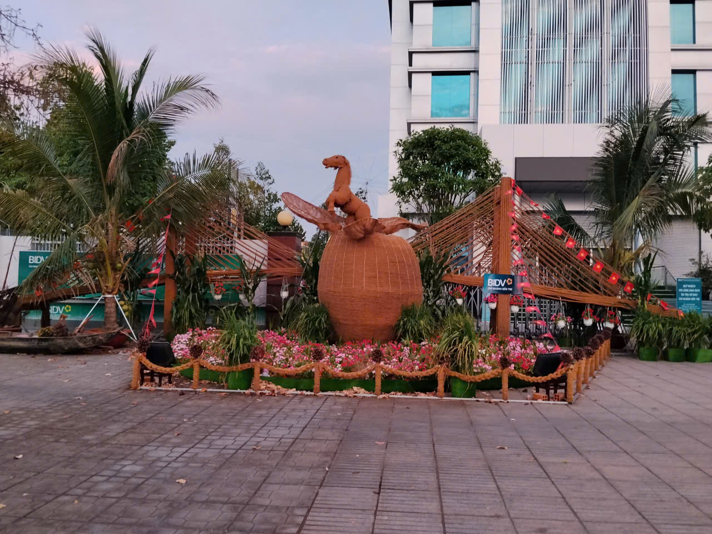

Vị trí địa lý
Bến Tre thuộc vùng Đồng bằng sông Cửu Long, được bao bọc bởi hệ thống sông Tiền, nổi tiếng là “xứ dừa” với những vườn dừa xanh mát quanh năm.Bến Tre nằm ở cuối nguồn của Đồng bằng sông Cửu Long, được bồi đắp bởi phù sa của Sông Tiền cùng hệ thống sông Ba Lai, Hàm Luông và Cổ Chiên. Chính mạng lưới sông ngòi dày đặc ấy đã chia Bến Tre thành ba dải cù lao lớn, tạo nên cảnh quan đặc trưng của vùng đất “bốn bề là nước”. Nhờ nguồn phù sa màu mỡ và khí hậu ôn hòa quanh năm, nơi đây phát triển mạnh các vườn cây ăn trái và đặc biệt là cây dừa – biểu tượng gắn liền với hình ảnh quê hương.
Thiên nhiên và “xứ dừa”
Bến Tre được mệnh danh là “xứ dừa” bởi diện tích trồng dừa lớn bậc nhất cả nước. Những hàng dừa cao vút, tán lá xòe rộng in bóng xuống dòng kênh xanh tạo nên khung cảnh thanh bình, thơ mộng. Từ cây dừa, người dân sáng tạo ra vô vàn sản phẩm như kẹo dừa, nước cốt dừa, dầu dừa, đồ thủ công mỹ nghệ… Không chỉ mang lại giá trị kinh tế, cây dừa còn trở thành biểu tượng văn hóa, đi vào thơ ca, âm nhạc và đời sống tinh thần của người dân địa phương.
Con người & làng quê
Người dân Bến Tre nổi tiếng hiền hòa, chất phác và giàu lòng nghĩa tình. Trong đời sống thường nhật, họ luôn giữ gìn sự chân thành, mộc mạc và hiếu khách. Văn hóa miệt vườn thể hiện rõ qua những buổi chợ quê ven sông, tiếng rao hàng buổi sớm, hay hình ảnh ghe xuồng chở đầy trái cây tươi ngon. Những con đường làng rợp bóng dừa, bờ kênh lộng gió, tiếng mái chèo khua nước hòa cùng tiếng chim vườn tạo nên nhịp sống chậm rãi, yên bình. Trẻ em lớn lên cùng sông nước, biết bơi xuồng từ nhỏ; người lớn gắn bó với ruộng vườn, với những mùa trái chín.
Truyền thống lịch sử và văn hóa
Bến Tre còn là vùng đất giàu truyền thống cách mạng, gắn liền với phong trào Đồng Khởi nổi tiếng trong lịch sử dân tộc. Tinh thần kiên cường, bất khuất ấy vẫn được gìn giữ và phát huy trong đời sống hôm nay. Bên cạnh đó, các loại hình văn hóa dân gian như đờn ca tài tử, lễ hội truyền thống và ẩm thực miệt vườn cũng góp phần làm phong phú bản sắc địa phương. Ngày nay, Bến Tre không chỉ giữ được nét mộc mạc vốn có mà còn phát triển du lịch sinh thái, thu hút du khách đến tham quan vườn trái cây, trải nghiệm cuộc sống miệt vườn và khám phá vẻ đẹp sông nước đặc trưng của miền Tây Nam Bộ.

Tết Bến Tre có gì đặc biệt?
🌴 Tết gắn liền với mứt dừa, bánh phồng dừa và hương vị ngọt ngào đặc trưng.
🌸 Nhà nhà trang trí mai vàng rực rỡ trước sân.
🙏 Người dân đi chùa đầu năm cầu bình an, may mắn.
👨👩👧👦 Gia đình sum họp, quây quần bên mâm cơm Tết ấm áp.